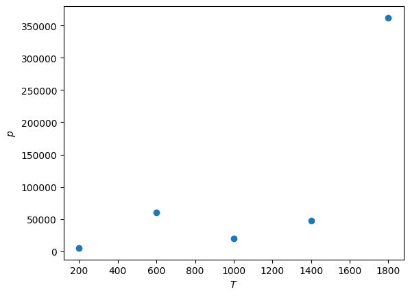
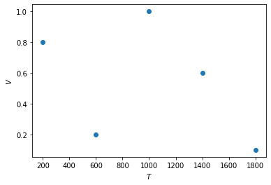
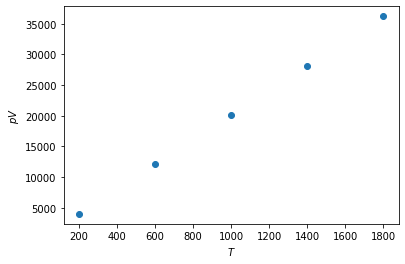

Exercises¶
First, we must create NumPy arrays to storage each of the three columns of data in the table.
import numpy as np
p = np.array([5020, 60370, 20110, 46940, 362160])
V = np.array([0.8, 0.2, 1.0, 0.6, 0.1])
T = np.array([200, 600, 1000, 1400, 1800])
Now we plot, \(p\) against \(T\).
import matplotlib.pyplot as plt
plt.plot(T, p, 'o')
plt.xlabel('$T$')
plt.ylabel('$p$')
plt.show()

Then \(V\) against \(T\)
plt.plot(T, V, 'o')
plt.xlabel('$T$')
plt.ylabel('$V$')
plt.show()

Finally, \(pV\) against \(T\).
plt.plot(T, p * V, 'o')
plt.xlabel('$T$')
plt.ylabel('$pV$')
plt.show()

There is a clear linear relationship between \(pV\) and \(T\), the ideal gas relation.
We can now calculate \(n\) for each data point by rearranging the ideal gas law to read,
\[ n = \frac{pV}{RT} \]
and we can use NumPy array to perform this mathematics.
from scipy.constants import R
n = p * V / (R * T)
print(n)
[2.41506889 2.42028069 2.41867706 2.41953615 2.41987978]
We can then find the mean \(n\) and standard error as follows,
mean = np.mean(n)
std_err = np.std(n) / len(n)
print(mean, std_err)
2.4186885144638026 0.00037708831485353504
Note that the len() function will return the number of items in a list as an int.